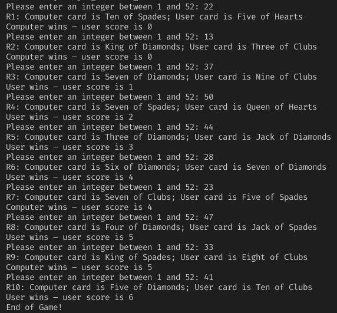
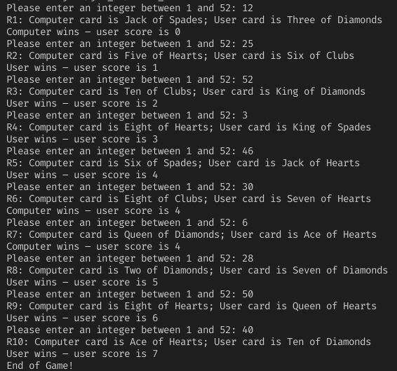

Class WarGame
- java.lang.Object
-
- WarGame
-
public class WarGame extends java.lang.ObjectGame of War
Student: Cordell Bonnieux
Class: CPSC 1150 W01
Professor: Dr. Bita Shadgar
Date: June 30 2021This Game of War asks the player for a number and calculates a card from a deck of cards. The program then generates a card to play against the user. The card with the higher rank, despite the suit, wins. The player's score is incremented for each win, and doubled for each tie. The game repeats for 10 rounds; after, the program is exited.
You will notice that rather than linearly assigning a card value to a number between 1 and 52, this program uses division and modulo to calculate the cards. This method is proven to provide 52 unique results, it imitates the random nature of picking a card off the top of a stack. Though the user may enter "10", this does not mean they will get a card numbered "10". To support my claim, I've written the results of this operation in an external repl here.
Part B Answers
-
Q:
"In the main method to call genInput method use the name of class and dot operator,
i.e: replace comp = genInput(); (line8) with comp = WarGame.genInput();
and compile and run the program. What happens?"
A: The program runs the same, this is because we are now explicitly calling the class(WarGame) which genInput() resides in; the reason that this was unecessary before, is because the method we are calling it from (main) is also already in that same class (WarGame). -
Q:
"Now remove static modifier in the getInput method’s header and compile the
program. What happens? Justify the result."
A: This change causes a compile error, this is because getInput() is now non-static thus, we cannot call the method in the same way. In order to call it as such, we would need to create a new class with this non-static method, then in our WarGame class main method create a new instance of our new class as an object and then call the method in dot notation from that new object (of the new class). For our purposes this is redundant, because this method is part of the WarGame class and necessary for it to function; it is not an outside class that I am calling to use it's functionality (like I am with Scanner).
- Since:
- 2021-06-30
Test Cases:
 Pseudocode:
Main()
START
- Compute constant integer ROUND = 10
- Compute integers user, comp, score = 0
- For integer r = 1, as long as r < ROUND, ++r
- Compute comp = genInput()
- Compute user = getInput()
- Compute printRoundInfo(r, user, comp)
- Compute score = printRoundResult(score, user, comp)
- Print "End of Game!"
- End
genInput()
- Retrun a random integer between 1 and 52 (inclusive)
getInput()
- Print "Please enter an integer between 1 and 52"
- Read integer num
- If num > 52 Or num < 1
- Return getInput()
- Return num
printRoundInfo(r, user, comp)
- Print "R" + r + ": Computer card is " + getRank(comp) + " of " + getSuit(comp) ; User card is " + getRank(user) + " of " + getSuit(user)
printRoundResult(score, user, comp)
- Compute integer winner = findWinner(user, comp)
- If winner == 0
- score *= 2
- Print "It's a tie - user score is " + score
- Else if winner == 1
- Compute score += 1
- Print "User wins - user score is " + score
- Else
- Print "Computer wins - user score is " + score
- Return score
findWinner(user, comp)
- Compute user /= 4, comp /= 4
- If user == 0
- user = 13
- Else if comp == 0
- comp = 13
- If user > comp
- Return 1
- Else if comp > user
- Return -1
- Else
- Return 0
getRank(num)
- Compute n /= 4
- Compute String rank
- If n == 1
- Compute rank = "One"
- Else if n == 2
- Compute rank = "Two"
- Else if n == 3
- Compute rank = "Three"
- Else if n == 4
- Compute rank = "Four"
- Else if n == 5
- Compute rank = "Five"
- Else if n == 6
- Compute rank = "Six"
- Else if n == 7
- Compute rank = "Seven"
- Else if n == 8
- Compute rank = "Eight"
- Else if n == 9
- Compute rank = "Nine"
- Else if n == 10
- Compute rank = "Ten"
- Else if n == 11
- Compute rank = "Jack"
- Else if n == 12
- Compute rank = "Queen"
- Else
- Compute rank = King
- Return rank
getSuit(num)
- Compute num %= 4
- Compute string suit
- If suit == 0
- Compute suit = "Diamonds"
- Else if suit == 1
- Compute suit = "Clubs"
- Else if suit == 2
- Compute suit = "Hearts"
- Else if suit == 3
- Compute = "Spades"
- Return suit
END
-
Q:
"In the main method to call genInput method use the name of class and dot operator,
i.e: replace comp = genInput(); (line8) with comp = WarGame.genInput();
and compile and run the program. What happens?"
-
-
Constructor Summary
Constructors Constructor Description WarGame()
-
Method Summary
All Methods Static Methods Concrete Methods Modifier and Type Method Description static intfindWinner(int user, int comp)This method takes two para metersuserandcomp, divides them by 4 and stores the subsequent values back into their respective variables.static intgenInput()This method generates a random integer between 1 and 52 and returns it.static intgetInput(java.util.Scanner input)This method prompts the user to enter an integer between 1 - 52, then reads the integer.static java.lang.StringgetRank(int num)This method takes the parameter num, divides it by 4 then stores the result back into num.static java.lang.StringgetSuit(int num)This method gets a value num and stores it's modulus by 4 remainder back into num.static voidmain(java.lang.String[] args)This method acts as the index for the program.static voidprintRoundInfo(int r, int user, int comp)This method prints out the round number followed by which cards the user and computer have chosen.static intprintRoundResult(int score, int user, int comp)This method, first calls thefindWinner()withuserandcompas parameters and stores its returned value in an integer calledwinner.
-
-
-
Method Detail
-
main
public static void main(java.lang.String[] args)
This method acts as the index for the program. First assigning an amount of rounds(10), then incrementing the core of the program times the number of rounds(10). *- Parameters:
args-
-
getInput
public static int getInput(java.util.Scanner input)
This method prompts the user to enter an integer between 1 - 52, then reads the integer. If the integer is below 1 or above 52, the mothod starts over, if not it returns the integer. *- Parameters:
input-- Returns:
-
genInput
public static int genInput()
This method generates a random integer between 1 and 52 and returns it.- Returns:
-
printRoundInfo
public static void printRoundInfo(int r, int user, int comp)This method prints out the round number followed by which cards the user and computer have chosen.- Parameters:
r-user-comp-
-
printRoundResult
public static int printRoundResult(int score, int user, int comp)This method, first calls thefindWinner()withuserandcompas parameters and stores its returned value in an integer calledwinner. Ifwinnerequals 0, it's a tie the user is prompted and the user's score is doubled. If the value is 1, the user wins, prompt them and increment the score. Ifwinneris neither, the computer wins, and the user is prompted. The score is then returned.- Parameters:
score-user-comp-- Returns:
-
findWinner
public static int findWinner(int user, int comp)This method takes two para metersuserandcomp, divides them by 4 and stores the subsequent values back into their respective variables. The method then checks ifuserorcompequals 0, if they do change them to 13. Then, compare the two values if user's value is greater return 1, If the computer's is higher, return -1, finally if they are equal return 0.- Parameters:
user-comp-- Returns:
-
getRank
public static java.lang.String getRank(int num)
This method takes the parameter num, divides it by 4 then stores the result back into num. Then a string variable called rank is created. num is then compared, if it equals an integer between 2 and 10, it's text value is stored in rank; similarily if it's value is 1, 11, 12, 0 or 13 rank will then equal "Ace", "Jack", "Queen" or "King" for both 0 and 13. After rank is assigned, return it.- Returns:
-
getSuit
public static java.lang.String getSuit(int num)
This method gets a value num and stores it's modulus by 4 remainder back into num. If num is 0, 1, 2 or 3, a string variable named suit is created and assigned "Diamonds", "Clubs", "Hearts" or "Spades" resepectively. The suit is then returned.- Parameters:
num-- Returns:
-
-